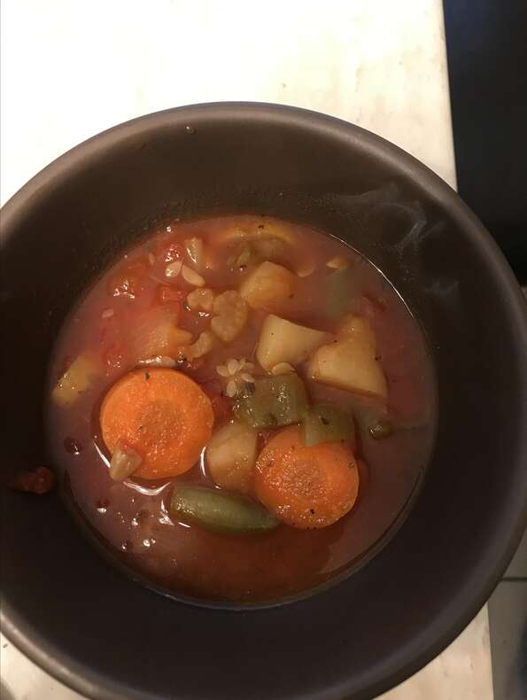

Vegetable Soup

Healthy and Hearty Vegetable Soup
This winter classic is always a family favorite. It is easy to make and it's great as an appetizer or as a meal all by itself.
Use fresh vegetables for the best results. Keep extra ingredients on hand because your family is going to be asking for more!
Ingredients
- 1 (14 ounce) can chicken broth
- 1 cup water
- 1 large potato, diced
- 2 carrots, sliced
- 2 stalks celery, diced
- 1 (14.5 ounce) can diced tomatoes
- 1 cup chopped fresh green beans
- 1 cup fresh corn kernels
- salt and pepper to taste
Steps